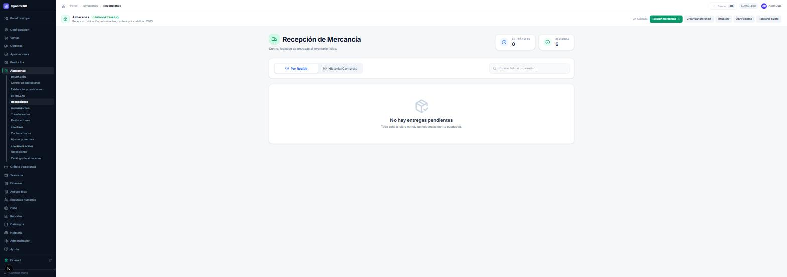
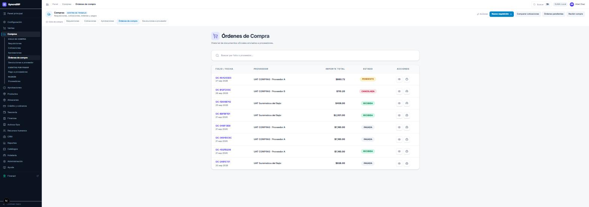

El sistema de gestión completo, capítulo por capítulo. Todo lo de esta parte funciona igual en los tres modos: es el ERP, y no depende del core.
administrador contador
Un ERP recién entregado no sabe nada de tu negocio: no sabe qué vendes, con qué impuestos, desde qué almacén, ni contra qué cuentas contables. Este capítulo es el que decide si el resto del curso funciona o no. Un sistema mal preparado no falla el primer día; falla el día 20, cuando alguien quiere facturar y descubre que faltaba una clave.
Configuración → Centro de configuración. Es un diagnóstico: recorre la empresa, comprueba módulo por módulo lo que hace falta para operar, y lo dice con un porcentaje y una lista.
Las cinco capacidades de arriba son la lectura rápida: «Listo para operar» significa que ese circuito ya se puede ejercer de punta a punta. Si dice que falta algo, dice qué.
Nada — es el primer sitio al que se entra. Pero todo lo demás depende de él: mientras el centro no diga «listo para operar» en una capacidad, esa capacidad no se puede enseñar en el curso ni usar en producción.
Cada capacidad tiene un asistente que la completa en orden. No son obligatorios —todo se puede configurar a mano en sus pantallas— pero el asistente evita el error clásico de configurar en desorden y descubrirlo tarde.
| Asistente | Qué deja listo |
|---|---|
| Wizard financiero | Catálogo de cuentas, categorías contables, fecha desde la que se controla la contabilidad y saldos iniciales. Va primero. |
| Wizard de ventas | Productos activos, categorías, unidades, formas de pago, lista de precios y al menos un cliente. |
| Wizard de compras | Proveedores, áreas del solicitante y el ciclo de aprobación de compra. |
| Wizard de inventario | Almacenes, ubicaciones y existencias iniciales. |
| Wizard de crédito | Productos de crédito, plazos, tasas y la matriz de firmas para autorizar líneas. |
| Importación inicial | Carga masiva desde Excel de productos, clientes, proveedores y existencias. |
El financiero va primero porque de él cuelgan las cuentas contra las que todo lo demás contabiliza. Si se configura ventas antes que la contabilidad, se venden productos cuya póliza no se puede generar, y eso no se ve en la pantalla de ventas: se ve semanas después en «Asientos pendientes» o, peor, en el cierre del mes.
Configuración → Integridad de datos. Un control preventivo que se corre después de importar, limpiar o migrar. Comprueba que los datos son coherentes entre sí — por ejemplo, que la existencia consolidada de un producto coincida con la suma de sus ubicaciones.

Abre el centro de configuración y anota el porcentaje de cada módulo. Elige el más bajo, entra en su wizard y completa un paso. Vuelve al centro, pulsa Validar nuevamente y comprueba que el porcentaje subió. Eso es el ciclo que vas a repetir toda la puesta en marcha.
administrador comprador contador
Los catálogos son los sustantivos del sistema: los productos, los clientes, los proveedores, los impuestos. Todo documento nombra catálogos, así que un catálogo mal hecho se propaga a todos los documentos que lo usen — y corregirlo después no corrige los documentos ya emitidos.
Productos → Catálogo de productos.

| Tipo | ¿Mueve inventario? | Cuándo se usa |
|---|---|---|
| FÍSICO | Sí | Lo que se compra, se guarda y se vende. |
| CONSUMIBLE | Sí | Lo que se consume en la operación y no se revende. |
| MATERIA_PRIMA | Sí | Entra en una receta o escandallo. |
| SERVICIO | No | Mano de obra, instalación, consultoría. No tiene existencia. |
Todo producto que mueve inventario tiene que tener categoría, porque de la categoría cuelgan sus cuentas contables. Sin ella la mercancía entra al almacén y la póliza no se genera — la recepción sale en verde y la contabilidad no se entera. Un SERVICIO no lleva inventario y no la necesita.
Para facturar hace falta, por producto, la ClaveProdServ y la ClaveUnidad del catálogo del SAT, más su impuesto. Se revisan en Finanzas → Clasificación SAT e Impuestos del catálogo, que listan exactamente los productos a los que les falta.
| Catálogo | Para qué sirve, más allá de clasificar |
|---|---|
| Categorías | Llevan las cuentas contables del producto: inventario, costo de venta e ingreso. Es el catálogo más importante del sistema y el que más se descuida. |
| Marcas | Sólo clasificación y filtros. |
| Unidades de medida | Cómo se cuenta. Enlaza con la ClaveUnidad del SAT. |
| Listas de precio | A qué precio se vende y a quién. Una empresa puede tener varias —mostrador, mayoreo, convenio— y el cliente puede llevar la suya. |
| Impuestos | IVA 16 %, 0 %, exento, retenciones. Se asigna por producto. |
Catálogos → Clientes. Es más que un nombre y un RFC: es el expediente del cliente.

Un cliente tiene tres capas, y conviene no mezclarlas:
| Capa | Qué es | Quién la mantiene |
|---|---|---|
| Identificación | Nombre o razón social, RFC, régimen fiscal, domicilio, contacto. Es lo que sale en la factura. | quien da de alta |
| Comercial | Lista de precios, condiciones, vendedor asignado. | ventas |
| Crediticia | Línea autorizada, plazo, riesgo, expediente de verificación. | crédito, con firmas |
La línea de crédito no se teclea aquí. Se solicita y pasa por la matriz de firmas (capítulo 6). Si el campo aparece bloqueado, es correcto.
Compras → Proveedores o Catálogos → Proveedores. Mismos datos fiscales que un cliente, más condiciones de pago y días de crédito. Un proveedor puede requerir alta y activación aprobadas según cómo esté configurada la matriz: quien da de alta a un proveedor decide a quién se le puede pagar, y eso normalmente no es una sola firma.
Da de alta un producto FÍSICO completo: categoría con cuentas, unidad, impuesto, ClaveProdServ y ClaveUnidad, y precio en la lista por omisión. Después da de alta un cliente de contado con RFC válido. Al terminar, vuelve al centro de configuración: los dos módulos deberían haber subido.
almacenista
El inventario del ERP no es una lista de cantidades: es dónde está cada cosa. El sistema lleva existencias por almacén y por ubicación dentro del almacén, con lote si el producto lo usa. Eso es lo que permite decirle a alguien «está en B-02-07» en vez de «hay ocho en algún sitio».
A-01-01. Es la dirección dentro del almacén.
Físico, reservado y disponible no son lo mismo y confundirlos causa problemas reales: físico es lo que hay, reservado es lo que ya está comprometido en un documento sin salir todavía, y disponible es lo que se puede vender. Vender contra el físico en vez del disponible es cómo se promete dos veces la misma caja.
| Operación | Qué hace | Efecto contable |
|---|---|---|
| Recepción | Entra mercancía contra una orden de compra. | Póliza de entrada; actualiza costo |
| Transferencia | Mueve mercancía entre almacenes. | Traspaso; no cambia el valor total |
| Reubicación | Mueve mercancía dentro del mismo almacén. | Ninguno: no cambia nada valuable |
| Conteo físico | Cuenta lo que hay de verdad y lo compara con los libros. | Ninguno hasta que se aplique el ajuste |
| Ajuste / merma | Corrige la existencia y explica por qué. | Póliza de ajuste o de merma |

El detalle del flujo está en el capítulo 4, porque una recepción no existe sin una orden de compra.

Si quien cuenta ve lo que debería haber, cuenta eso. El conteo ciego es la única forma de que el número salga de la estantería y no de la pantalla. Cuesta un poco más y es el único que vale para valuar.
Un ajuste de inventario escribe su póliza: contra la cuenta de inventario de la categoría del producto y contra la cuenta de ajuste o merma. Si al producto le falta categoría, el ajuste entra y la póliza queda encolada — se revisa en Finanzas → Asientos pendientes.
Abre un conteo ciego de una sola ubicación con dos productos. Captura una cantidad distinta a propósito en uno. Cierra el conteo, mira la diferencia y aplica el ajuste. Después ve a Finanzas → Libro diario y busca la póliza que acaba de nacer.
almacenista comprador gerencia tesoreria
El ciclo de compra es el capítulo donde mejor se ve la idea de segregación de funciones: pedir, autorizar, elegir proveedor, recibir y pagar son cinco decisiones distintas, y el sistema impide activamente que las tome la misma persona. Si estás solo delante de la pantalla y algo «no te deja», lo más probable es que no sea un fallo.
Compras → Requisiciones → Nueva.
Un producto del que todavía no se sabe el costo vale cero, lo que empuja el importe hacia abajo. Es deliberado: lo desconocido no escala solo a la dirección.
Si el importe supera el umbral configurado, la requisición queda PENDIENTE y aparece en la bandeja de quien manda. Si no lo supera, nace ya COTIZANDO y el comprador puede trabajarla.
Tres cosas, y si faltan el sistema lo dice por su nombre en vez de fallar a medias: (1) el área del solicitante, (2) la ruta de aprobación de esa área y (3) la categoría de cada producto que mueve existencias.
Están implementados pero llegan sin configurar. Hasta que alguien ponga los números —«hasta $X no necesita firma»— toda requisición sube al mando, cueste diez cajas de guantes o una flotilla. Es una decisión de negocio, no técnica, y se fija en Aprobaciones → Flujos de aprobación.
La requisición no se detiene. El sistema busca, en este orden: la persona que la ruta nombra si sigue activa → quien tenga ese rol → quien tenga el rol que esa persona tenía → administración. El solicitante no aparece en ninguno de los cuatro: la suplencia cubre ausencias, no perdona la separación de funciones.
Aprobaciones → Bandeja. Se ve qué se pide, para cuándo, quién lo pide y el importe estimado. Rechazar exige motivo escrito: el motivo es lo único que le dice al solicitante qué cambiar.

Desde aquí el comprador ya sólo da seguimiento: puede consultar las recepciones para saber si llegó, y no puede registrarlas.
• Sube la existencia en esa ubicación.
• Actualiza el costo del producto con lo que se pagó.
• Recalcula el precio de venta desde ese costo con el margen configurado
(ejemplo real: costo $100 → precio $135; sube el costo a $137 → el precio pasa a $185 sin
recapturar nada).
• Genera la póliza de la entrada.
• Ese costo nuevo valúa la siguiente requisición del mismo producto.
Si al producto le falta la cuenta de inventario, la mercancía entra y la póliza no se genera, y nada en la pantalla de recepción lo delata. Revisa Finanzas → Asientos pendientes después de recibir: ahí aparece qué faltó y por qué. El cierre mensual también lo bloquea, pero eso es tres semanas tarde.
Y si pulsas dos veces, no recibes dos veces: la recepción lleva una clave de idempotencia respaldada por un índice único en la base.
Es de tesorería, y el comprador no puede llegar aquí: quien elige al proveedor no le firma el cheque.
Registrar el pago escribe el asiento Dr. Proveedores / Cr. Banco o Caja, mueve el saldo de la cuenta bancaria y deja el movimiento en Tesorería marcado como del documento — no se cancela desde tesorería (capítulo 7).
Compras → Devoluciones a proveedor. Es la compra al revés: salen las piezas del almacén, baja la cuenta por pagar y se genera la póliza inversa. Se hace contra una recepción, no contra la orden, porque sólo se devuelve lo que entró.
Con tres personas distintas (o tres sesiones): levanta una requisición de dos productos, apruébala con otro usuario, captura dos cotizaciones de proveedores distintos, adjudica y aprueba, genera la orden, recíbela parcialmente y páguala. Después comprueba: la existencia subió sólo en lo recibido, la orden quedó PARCIAL, el costo del producto cambió, y en el libro diario hay dos pólizas nuevas.